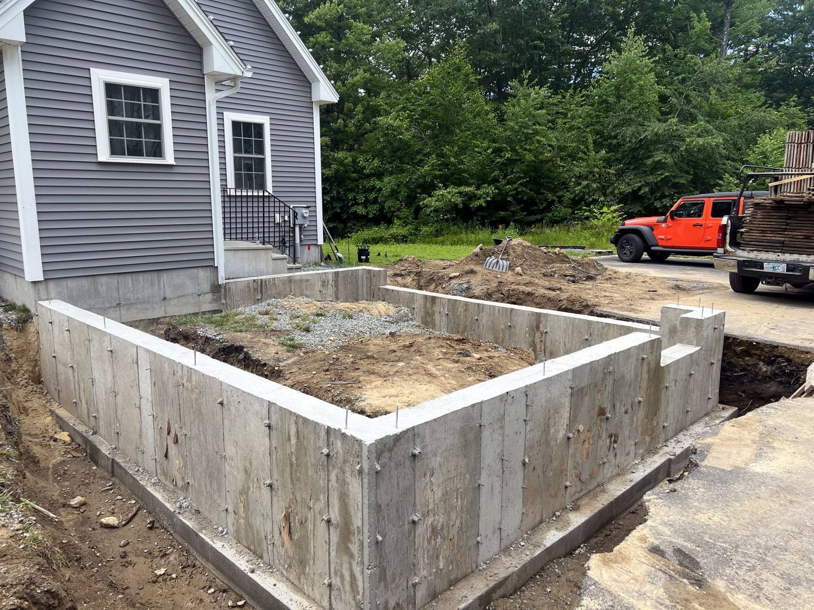
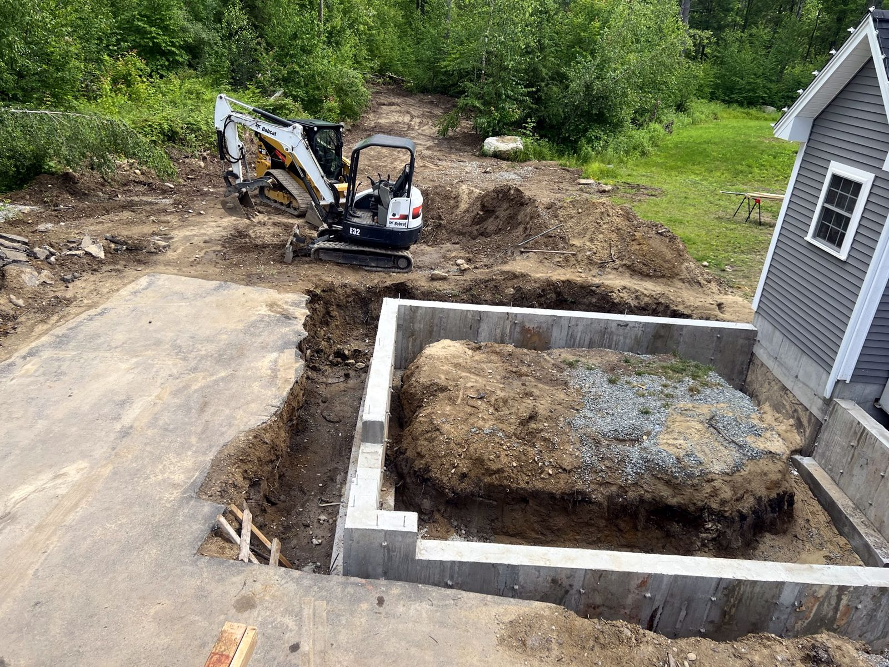
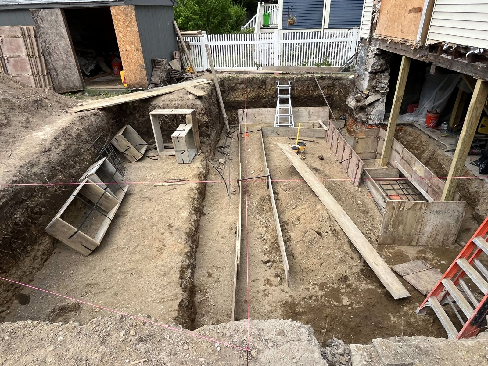
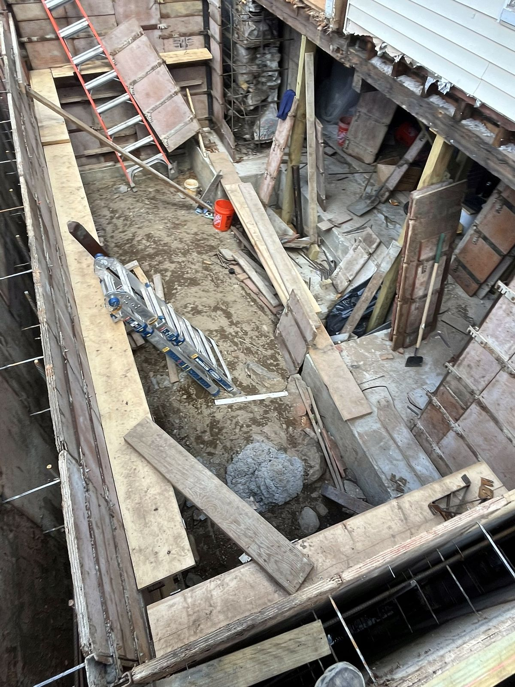
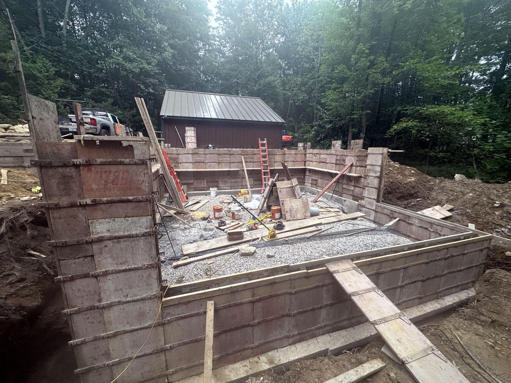
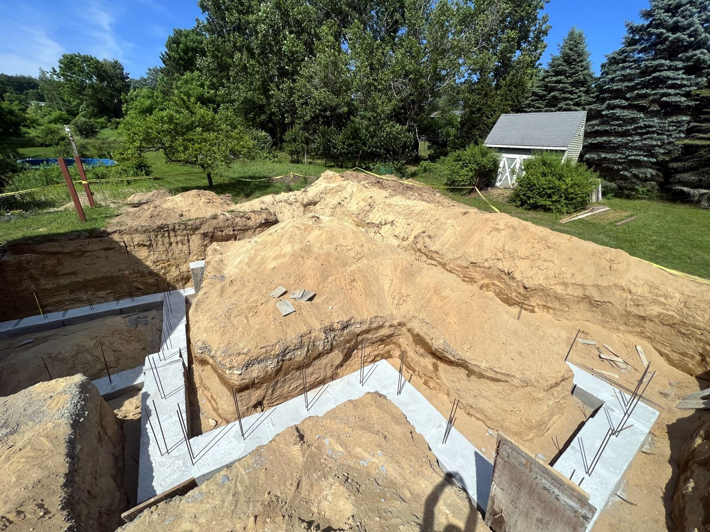

← All Projects
Additions
Foundations for home additions, including tight work next to and under existing houses.
 Addition foundation, forms set – Ashby, MA
Addition foundation, forms set – Ashby, MA

Addition foundation, forms stripped – Ashby, MA

Finished addition foundation with excavator – Ashby, MA

Addition foundation under an existing home – Boston, MA

Addition footings and walls on a tight urban site – Boston, MA

Addition foundation walls – Derry, NH

Addition footings – Milford, NH
Get a Free Quote